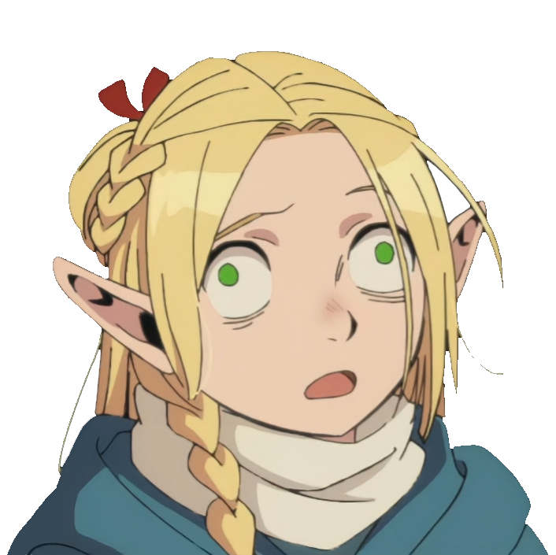

Mengzhen Hu (YuKi)
Home
Packages
Projects
CV

Mengzhen Hu (YuKi)
Fool-Stack Developer
Try switching to
Dark Mode
GitHub
Scholar
ORCID
Twitter
Email
×
I'm inclined to give you a shot, but what if I decide to go another way?
I'd say that's fair. Sometimes I like to hang out with people who aren't that bright, you know, just to see how the other half lives.